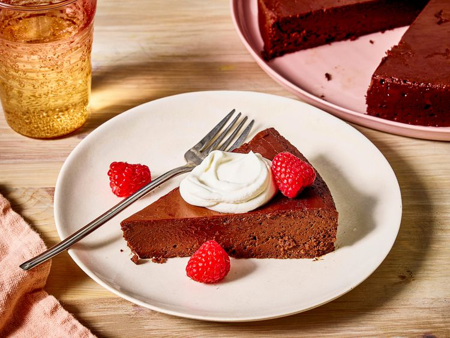

Flourless Chocolate Cake Recipe
A dense flourless chocolate cake that's rich and fudgy. It's easy to make and perfect for a decadent chocolate dessert that's gluten free.

Ingredients
- Sugar
- Water
- Salt
- Chocolate
- Butter
- Eggs
Directions
- Gather all ingredients. Preheat the oven to 300 degrees F (150 degrees C). Grease a 10-inch round cake pan; set aside.
- Combine sugar, water, and salt in a small saucepan over medium heat. Stir until completely dissolved; set aside.
- Melt bittersweet chocolate in a microwave-safe glass or ceramic bowl in 15-second intervals, stirring after each interval, 1 to 3 minutes. Pour chocolate into the bowl of an electric mixer.
- Cut butter into pieces; beat butter, one piece at a time, into chocolate until combined.
- Beat in hot sugar water. Slowly beat in eggs, one at a time.
- Pour batter into the prepared cake pan.
- Have a pan larger than the cake pan ready; put the cake pan in the larger pan and fill the larger pan with boiling water halfway up the sides of the cake pan.
- Bake cake in the water bath in the preheated oven for 45 minutes. The center will still look wet. Place cake in the refrigerator until thoroughly chilled, 8 hours to overnight.
- To unmold, dip the bottom of the cake pan in hot water for 10 seconds and invert onto a serving plate.